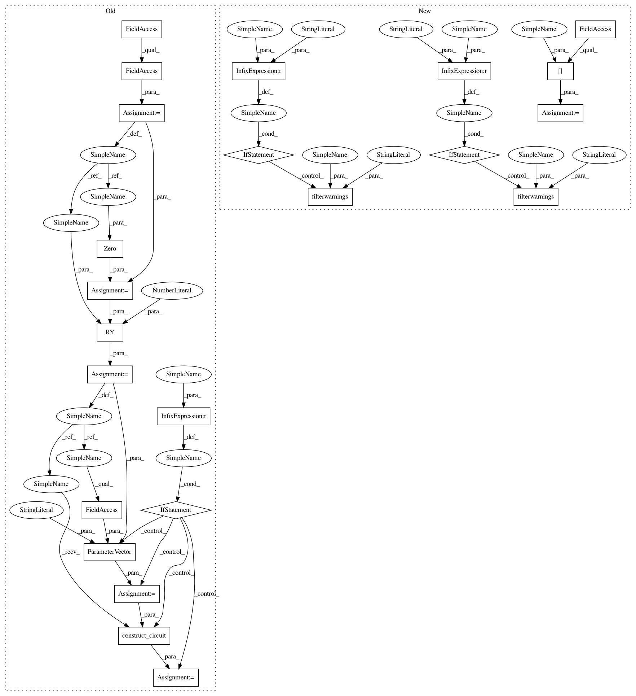

97c9871e334ae1e98c4eba025cf352e70f6a6701,test/aqua/test_vqe.py,TestVQE,test_vqe_statevector_snapshot_mode,#TestVQE#Any#,140
Before Change
self.skipTest("Aer doesn"t appear to be installed. Error: "{}"".format(str(ex)))
return
backend = Aer.get_backend("statevector_simulator")
num_qubits = self.qubit_op.num_qubits
init_state = Zero(num_qubits)
var_form = RY(num_qubits, depth=3, initial_state=init_state)
if var_form_type is QuantumCircuit:
params = ParameterVector("θ", var_form.num_parameters)
var_form = var_form.construct_circuit(params)
optimizer = L_BFGS_B()
algo = VQE(self.qubit_op, var_form, optimizer, max_evals_grouped=1)
quantum_instance = QuantumInstance(backend,
seed_simulator=aqua_globals.random_seed,
After Change
self.skipTest("Aer doesn"t appear to be installed. Error: "{}"".format(str(ex)))
return
backend = Aer.get_backend("statevector_simulator")
wavefunction = self.ry_wavefunction[mode]
optimizer = L_BFGS_B()
if mode == "wrapped":
warnings.filterwarnings("ignore", category=DeprecationWarning)
vqe = VQE(self.qubit_op, wavefunction, optimizer, max_evals_grouped=1)
if mode == "wrapped":
warnings.filterwarnings("always", category=DeprecationWarning)
quantum_instance = QuantumInstance(backend,
seed_simulator=aqua_globals.random_seed,
seed_transpiler=aqua_globals.random_seed)
result = vqe.run(quantum_instance)
In pattern: SUPERPATTERN
Frequency: 3
Non-data size: 23
Instances
Project Name: Qiskit/qiskit-aqua
Commit Name: 97c9871e334ae1e98c4eba025cf352e70f6a6701
Time: 2020-04-30
Author: jules.gacon@googlemail.com
File Name: test/aqua/test_vqe.py
Class Name: TestVQE
Method Name: test_vqe_statevector_snapshot_mode
Project Name: Qiskit/qiskit-aqua
Commit Name: 97c9871e334ae1e98c4eba025cf352e70f6a6701
Time: 2020-04-30
Author: jules.gacon@googlemail.com
File Name: test/aqua/test_vqe.py
Class Name: TestVQE
Method Name: test_vqe_qasm_snapshot_mode
Project Name: Qiskit/qiskit-aqua
Commit Name: 97c9871e334ae1e98c4eba025cf352e70f6a6701
Time: 2020-04-30
Author: jules.gacon@googlemail.com
File Name: test/aqua/test_vqe.py
Class Name: TestVQE
Method Name: test_vqe_callback
Project Name: Qiskit/qiskit-aqua
Commit Name: 97c9871e334ae1e98c4eba025cf352e70f6a6701
Time: 2020-04-30
Author: jules.gacon@googlemail.com
File Name: test/aqua/test_vqe.py
Class Name: TestVQE
Method Name: test_vqe_statevector_snapshot_mode